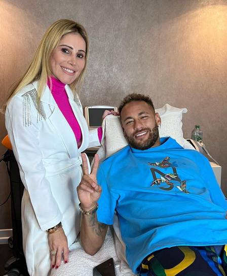

Rayan faz último gol e garante o hexa para o Brasil
Por: Ana Luiza
A final contra a Espanha deixou o coração dos brasileiros a mil, ao mesmo tempo que abriu palco para as novas estrelas da seleção brilharem!
As principais notícias sobre a copa!(Que foi sediada dentro da Muralha Maria)
Por: Ana Luiza
A final contra a Espanha deixou o coração dos brasileiros a mil, ao mesmo tempo que abriu palco para as novas estrelas da seleção brilharem!

Por: Ana Luiza
Ancelloti cogita injetar flúido espinhal de titã em Neymar para ele virar um portador de um dos titãs originais e poder se curar de suas lesões até mesmo durante as partidas.
Está listado abaixo, os principais motivos pelo qual o uso da tecnologia pode ser uma aliada ou uma inimiga para o mundo
Benefícios: